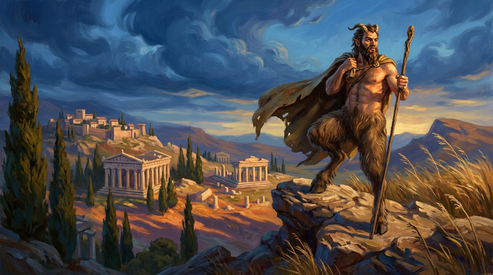
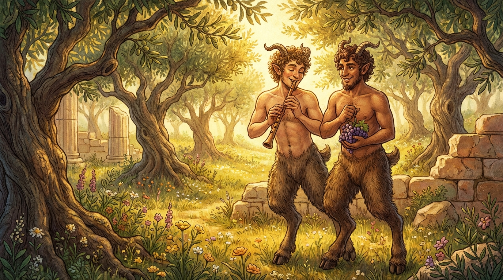
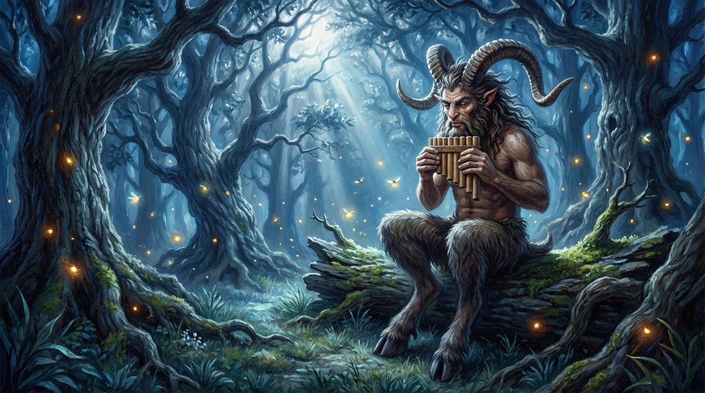
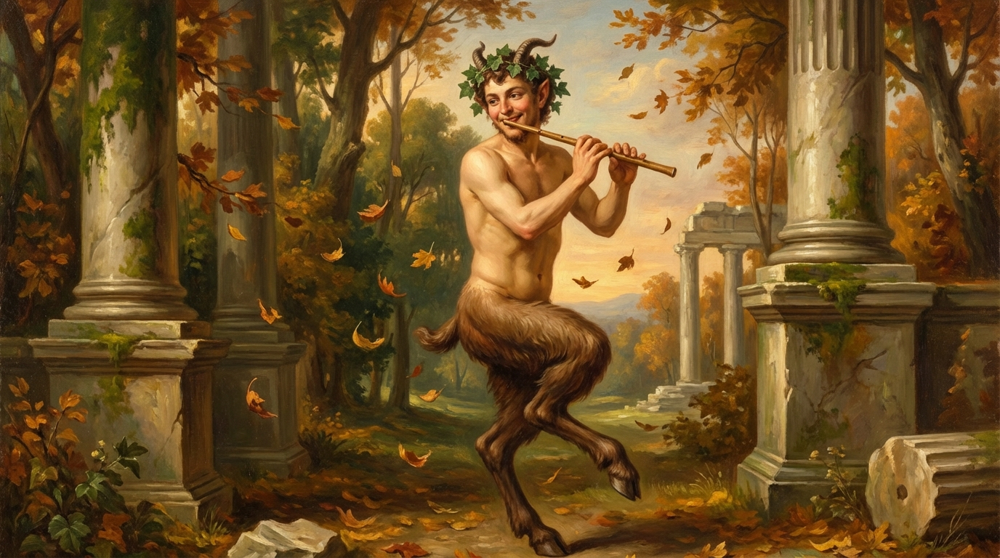
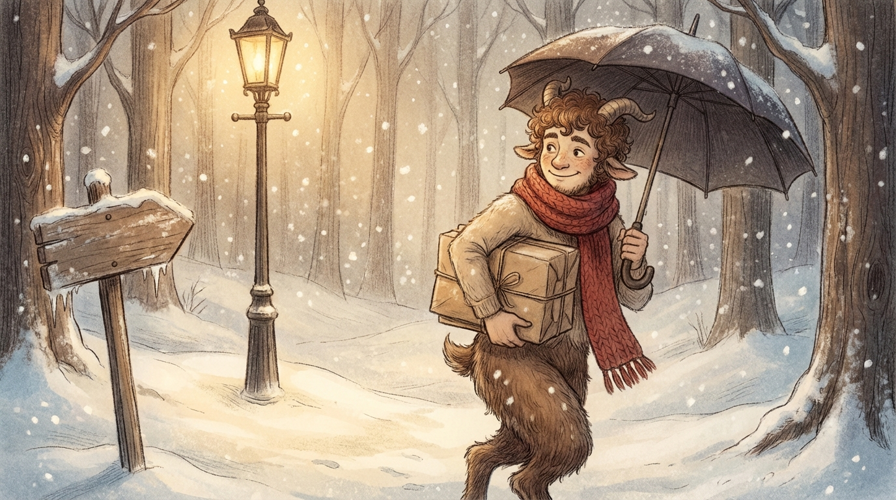

Imagine a creature with the upper body of a person — human face, arms, chest — but from the waist down, it has the legs of a goat. Furry, muscular legs ending in hard hooves instead of feet. And up on top of their head? Small horns poking through curly hair.
These beings go by different names depending on who's telling the story. The ancient Greeks called them satyrs. The Romans called them fauns. In many tales, they lived deep in forests and mountains, far from human cities. They were connected to nature in a way that humans could never be — they understood the language of animals, the moods of rivers, and the secret rhythms of the seasons.
But here's the really interesting part: these weren't monsters. In most myths, goat-legged beings were companions, tricksters, musicians, and dancers. They loved to have fun, but they also had deep wisdom about the natural world. They were wild, yes — but not evil.

In ancient Greece, satyrs were the followers of Dionysus — the god of nature, celebration, and transformation. They wandered the countryside in groups, playing music, dancing, and generally being the wildest party guests in mythology.
But the most famous goat-legged figure of all was Pan — the god of the wild, shepherds, and flocks. Pan was different from other Greek gods. He didn't live on Mount Olympus in a golden palace. He lived in caves and forests, playing a musical instrument made from reeds that we still call "pan pipes" today.
Pan's music was said to be so beautiful that it could make trees sway, rivers change course, and wild animals gather to listen. But it could also be so eerie that it made travelers lose their way in the woods. Pan represented something the Greeks deeply understood: nature is beautiful AND dangerous at the same time.

When the Romans inherited Greek mythology, they gave the goat-legged beings a new name: fauns, named after Faunus, their own god of forests and fields. Fauns were a little different from satyrs. While Greek satyrs could be loud and chaotic, Roman fauns were often described as gentle, curious, and kind.
Faunus himself was one of the most beloved Roman gods. Farmers prayed to him for good harvests. Shepherds asked him to protect their flocks from wolves. He was seen as a friendly spirit of the Italian countryside — someone who cared about the land and the people who worked it.
The Romans also told stories about fauns appearing at the edge of forests at twilight, watching humans from the tree line. They were guardians of the boundary between civilization and wilderness — standing right at the line where the safe, familiar world ended and the unknown began.
Of all the animals ancient people could have combined with humans, why goats? This is actually a really deep question, and there are a few answers.
First, goats were everywhere in the ancient world. In Greece and Italy, goats climbed rocky mountains that no other animal could handle. They survived in places too harsh for cattle or horses. Goats were tough, independent, and a little unpredictable — just like the satyrs and fauns in the stories.
Second, goats represented the wild spaces between. A goat isn't fully wild like a wolf. It isn't fully tame like a dog. It's somewhere in the middle — half-domesticated but always ready to go its own way. That made goats the perfect animal to symbolize creatures that were half-human and half-wild.
Third, there's something about hooves on rocky ground. Goat-legged beings can go places humans can't — up cliff faces, through deep forests, across mountain ridges at night. The goat legs give them access to the wild places that humans can only visit as guests.

These ancient creatures didn't stay in the past. They walked right out of Greek and Roman mythology and into some of the most famous stories of the last hundred years.
In C.S. Lewis's The Chronicles of Narnia, the very first magical creature Lucy meets is Mr. Tumnus — a faun carrying an umbrella and parcels through a snowy forest. He's gentle, musical, and a little sad. Lewis was deliberately reaching back to those Roman fauns: the kind, curious guardians who stand at the boundary between the ordinary world and something extraordinary.
In Rick Riordan's Percy Jackson series, Percy's best friend Grover Underwood is a satyr who hides his goat legs under jeans and sneakers. Grover is funny and loyal, but also deeply connected to nature — he can sense when the environment is in danger. Riordan took the ancient Greek idea of satyrs as nature spirits and made it modern.
From ancient Greek pottery to Narnia's lamppost, from Pan's pipes to Percy Jackson's best friend, goat-legged beings have been walking alongside humans in our stories for over 2,500 years. And the reason is simple: they represent something we all feel — the pull between the safe, civilized world we've built and the wild, untamed world that still calls to us from the edge of the forest.
You've read the guide — now let's see how much stuck. Pick your answer for each question, then hit See My Score.